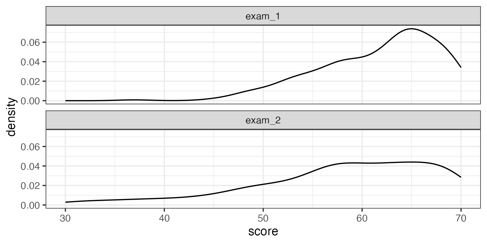
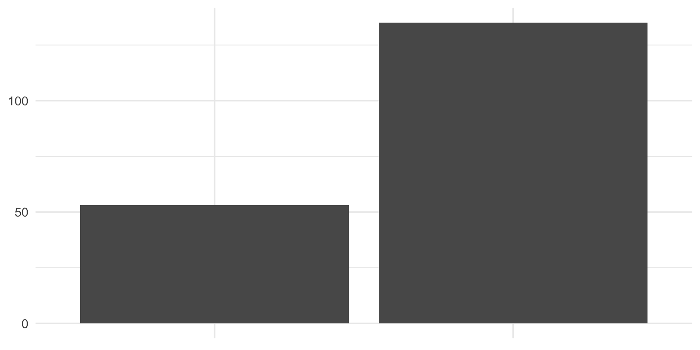

Customizing Quarto reports and presentations
Lecture 24
Warm up
While you wait for class to begin…
Take the time to fill out course and TA evaluations!
Want to nominate a TA as “TA of the Year”? Send an email to dus@stat.duke.edu with your nomination.
Before we get started
Go to your
aerepo, and pull.Make a change, any change, to
ae-18-second-to-last-ae.qmd. render, commit, and push.
Exam stats
| Exam | Mean | Median | SD | IQR |
|---|---|---|---|---|
| 1 | 61.7 | 63 | 5.96 | 8 |
| 2 | 58 | 59 | 9.14 | 12 |

What is this?
Another try – What is this?

Project presentations on Monday! 🥳
Make sure your presentation is pushed to your GitHub repo before your lab section.
Get to lab on time, 5 minutes prior if possible – all team members must be present in class and take part in the presentation + Q&A
Find out your presentation order when you get there.
Deliver or play your 5-minute presentation – we’ll cut you off at 5 minutes
Answer questions during your own Q&A or ask questions to others.
Fill out feedback forms while you listen to others’ presentations.
Project write-ups due Wednesday
There’s a good chance you’ll be done with these on Monday as well
But you might want to improve your write-up based on inspiration from other teams’ presentations and/or ideas that came up during your Q&A.
Project repos will close at 8:00am on Wednesday. There is no Gradescope submission, just push your final edits to GitHub.
Questions from last time
Expectations
The goal of this project is for you to demonstrate proficiency in the techniques we have covered in this class (and beyond, if you like) and apply them to a novel dataset in a meaningful way.
Note
Beyond, if you like – “you” is the whole team!
Expectations
The goal is not to do an exhaustive data analysis i.e., do not calculate every statistic and procedure you have learned for every variable, but rather let me know that you are proficient at asking meaningful questions and answering them with results of data analysis, that you are proficient in using R, and that you are proficient at interpreting and presenting the results.
Requirements
Focus on methods that help you begin to answer your research questions. You do not have to apply every statistical procedure we learned.
Tip
Critique your own methods and provide suggestions for improving your analysis. Discuss issues pertaining to the reliability and validity of your data, and appropriateness of the statistical analysis.
Tip
You can critique the current research without talking about a hypothetical future research,.
How many plots
You do not need to visualize all of the data at once. A single high-quality visualization will receive a much higher grade than a large number of poor-quality visualizations.
Note
There is no specific, secret number of visualizations I’m expecting, the right number is the number that it takes to answer your question.
Submission
You will not be submitting anything on Gradescope for the project. Submission of these deliverables will happen on GitHub and feedback will be provided as GitHub issues that you need to engage with and close. The collection of the documents in your GitHub repo will create a webpage for your project. To create the webpage go to the Build tab in RStudio, and click on Render Website.
Writeup
- Is there any paper that is required as well as the presentation?
- What is the project write up?
- Are write ups usually around the 10 page limit?
- Is there a recommended outline to the project?
Grading / rubric
Something else 💛
I have enjoyed this semester, and I want to continue learning R. What classes do you recommend I take to continue my learning?
STA 323: Statistical computing - R as a programming language
STA 210: Regression analysis - for anyone interested in applications
STA 221: Regression analysis - for majors + minors + anyone interested in the theory as well as applications
Code review
Quarto demo / Code review recap
Your project write-up with Quarto
Figure sizing:
fig-width,fig-height, etc. in code chunks.Figure layout:
layout-ncolfor placing multiple figures in a chunk.Further control over figure layout with the patchwork package.
Chunk options around what makes it in your final report:
message,echo, etc.Citations.
Finalizing your report with
echo: false.
Building your project website with Quarto
The
docsfolder.Making sure your website reflects your latest changes.
Customizing the look of your website.
Slides
Option 1: Make your slides not in Quarto but make sure they’re available in your Quarto project website.
Option 2: Make your slides with Quarto.
Before you leave
if you haven’t yet done so…
Go to your
aerepo, and pull.Make a change, any change, to
ae-18-second-to-last-ae.qmd. render, commit, and push.